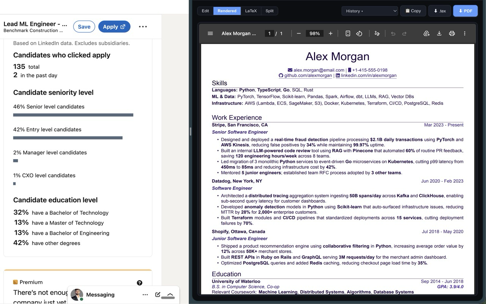
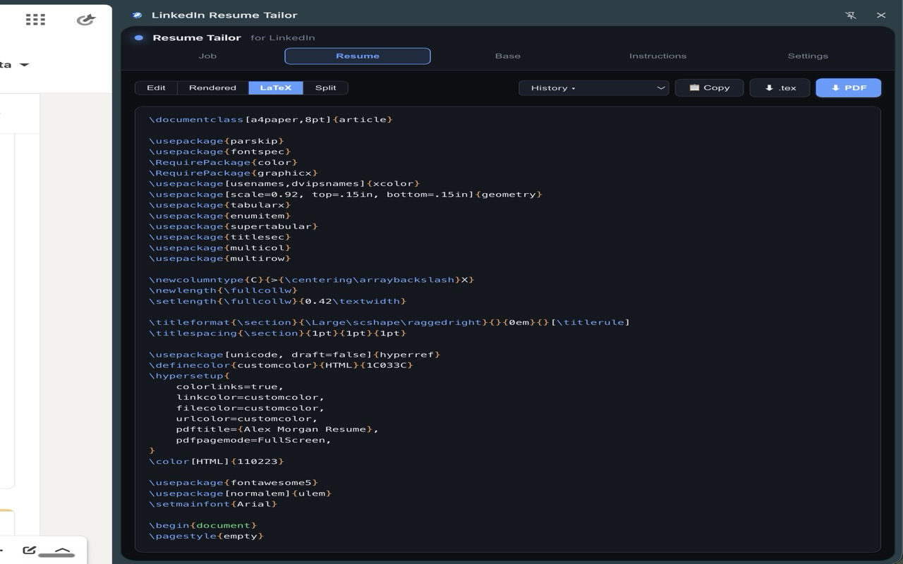
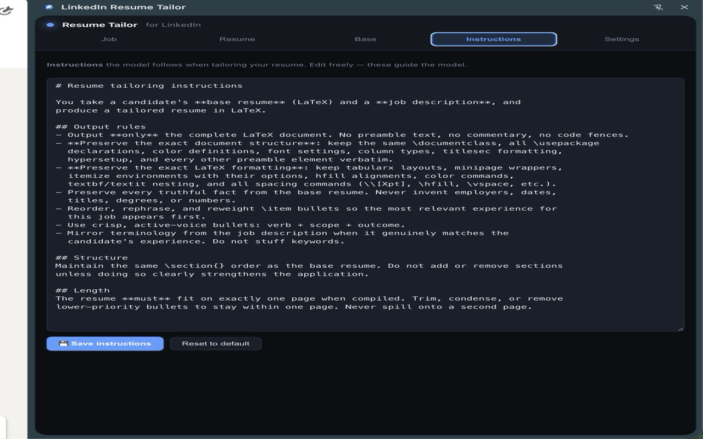
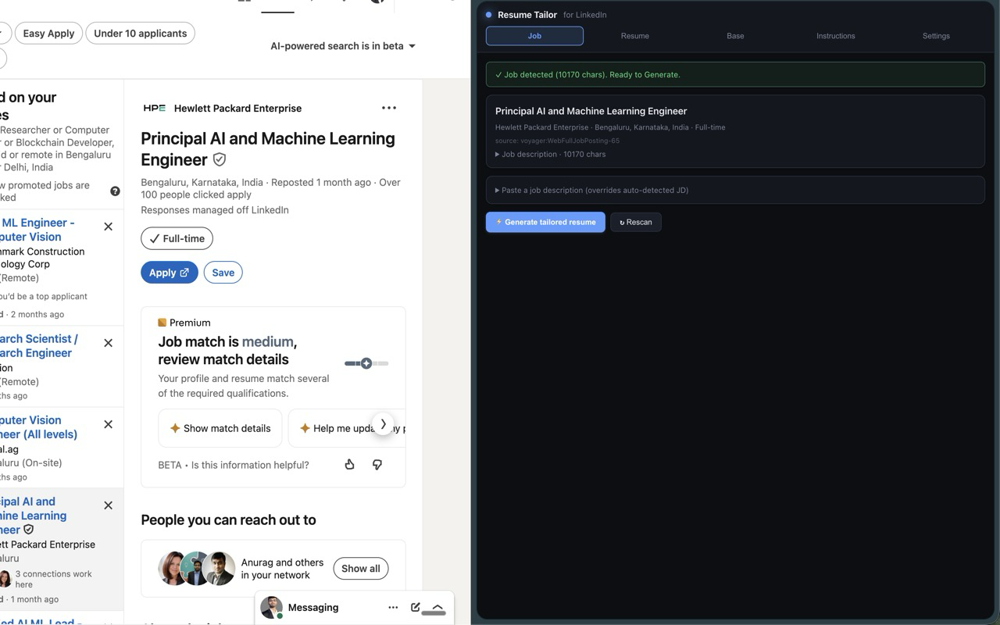
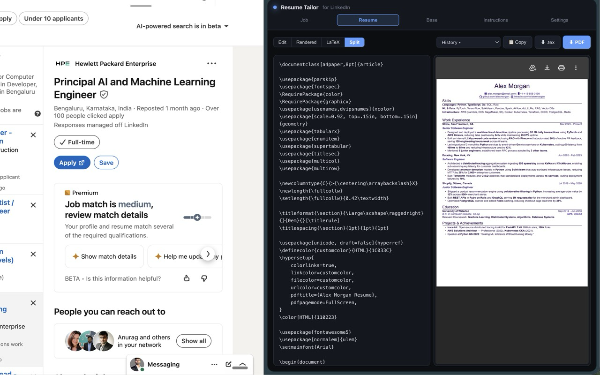

Detects job postings, extracts the full description, and generates a perfectly tailored LaTeX resume using your own LLM. Everything stays on your machine.

A focused tool that does one thing exceptionally well.
Your base resume is LaTeX. The output is LaTeX. Same preamble, same packages, same formatting. Zero conversion loss.
Watch tokens stream into the editor in real-time. Cancel anytime. 120-second timeout keeps things snappy.
The Rendered tab compiles your LaTeX via xelatex in the cloud and shows the PDF inline. Download with one click.
Three-tier detection: LinkedIn's voyager API first, DOM heading fallback, then heuristic text block. Works on every job type.
Resume, API key, and instructions live in chrome.storage.local. No backend, no analytics, no tracking whatsoever.
Any OpenAI-compatible endpoint: OpenAI, Anthropic via OpenRouter, Blackbox, or self-hosted. You choose the model.
Navigate to any job posting on LinkedIn. The extension auto-detects it and extracts the full job description — even for external-apply listings.
One click sends your base resume + the JD to your configured LLM. Watch tokens stream in real-time as your tailored resume takes shape.
Preview the compiled PDF inline, edit the LaTeX if needed, and download. Your formatting is preserved exactly as you designed it.

Job detection & extraction
Syntax-highlighted LaTeX editor
Live PDF preview
BYO LLM settingsYour resume, API key, and instructions are stored in chrome.storage.local — never sent to any server. The only network requests are to the LLM endpoint you configure and the LaTeX compiler for PDF preview. No analytics. No tracking. No backend. Period.
Install the extension, paste your LaTeX resume, and tailor it to any job in seconds.
Add to Chrome — FreeWorks with Chrome, Edge, Brave, and any Chromium browser.